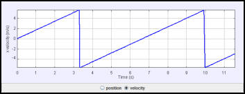

The velocity changes abruptly when an object reaches the end of the incline.
The Sliding On An Incline Plane model simulates the frictionless motion of a block, ball, or toy car on an incline plane. Separate windows show a position-velocity data table and a graph.
The Sliding On An Incline Plane model was developed by Wolfgang Christian using the Easy Java Simulations (EJS) version 4.3.3 authoring and modeling tool.
You can examine and modify the compiled EJS model if you run the model (double click on the model's jar file), right-click within a plot, and select "Open EJS Model" from the pop-up menu. You must have EJS installed on your computer. Information about EJS is available at: <http://www.um.es/fem/Ejs/> and in the ComPADRE OSP Collection <http://www.compadre.org/OSP/>.